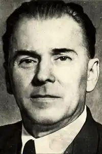
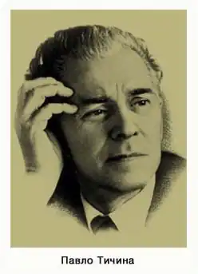
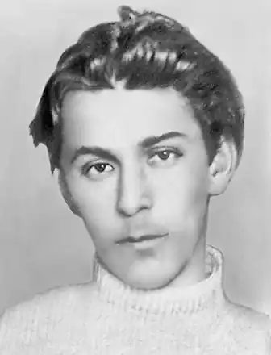
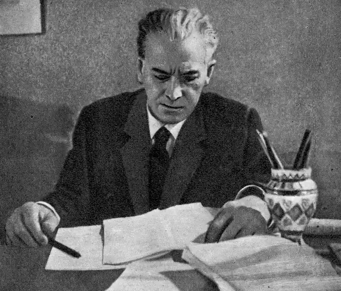
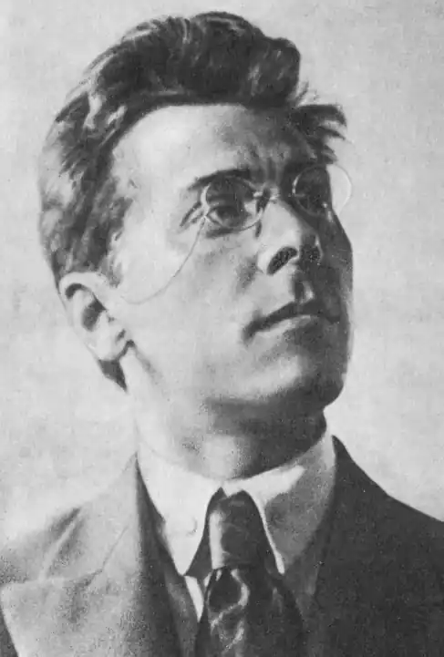

Тичина Павло Григорович
(1891-1967)
поет, громадський та державний діяч Народився 27(15) січня 1891 р. у селі Піски Козелецького повіту Чернігівської губернії (тепер Бобровицького району Чернігівської області). Походить зі старовинного козацького роду (його пращур, за родинним переказом, був полковником у Богдана Хмельницького). Батько майбутнього поета був сільським дяком — вчителем "школи грамоти". Змалку виявив хист до музики, малювання і віршування. В 1900—1907 рр. навчався в Чернігівському духовному училищі (бурсі), в 1907—1913 — в Чернігівській духовній семінарії. Згодом, навчаючись у Київському комерційному інституті, працював у газеті "Рада". На цей час припало його ознайомлення з новітнім українським мистецтвом, особисте знайомство з найвідомішими його представниками. В 1913—1914 рр. — у редакції ліберального україномовного журналу "Світло", а після його закриття — в Чернігівському статистичному бюро. У 1916—1917 рр. — помічник хормейстера в українському театрі М.К.Садовського. 1920 року подорожував із капелою К.Стеценка "Думка" Правобережною Україною від Києва до Одеси. Того ж року організував хор (з 1921 р. — Капела-студія імені М.Леонтовича), з яким виступав до 1923 року. З 1923 по 1934 рік — співредактор журналу "Червоний шлях" (Харків). Входить до заснованої 1923 р. Спілки пролетарських письменників України "Гарт". 1926 року взяв активну участь у створенні ВАПЛІТЕ (Вільної Академії пролетарської літератури) з М.Г.Хвильовим на чолі, куди увійшли й колишні члени "Гарту". З 1929 р. — дійсний член Академії наук Української РСР, у 1936—1939 рр. і в 1940—1943 рр. очолює Інститут літератури АН УРСР. З 1947 р. — член-кореспондент Болгарської АН, доктор філології. 1943—1948 рр. — міністр освіти УРСР. З 1953 по 1959 рік — голова Верховної Ради УРСР, заступник голови Ради Національностей ВР УРСР, член багатьох товариств, комітетів, президій, кавалер орденів і медалей. Лауреат Державної премії СРСР (1941), Державної премії УРСР імені Т.Г.Шевченка (1962). 1967 року отримав звання Герой Соціалістичної Праці. Помер 16 вересня 1967 року в Києві. Багаторічна експлуатація імені й авторитету митця тоталітарною системою стала причиною його глибокого внутрішнього конфлікту із самим собою, призвела до падіння його реноме як поета в очах співвітчизників і світової громадськості. У сучасників виявилося неоднозначне ставлення до його творчості, небажання вникати в її приховані підтексти і мотиви. П.Г.Тичина гостро відчував трагізм свого становища в ролі гвинтика тоталітарної ідеологічної машини (що засвідчено, зокрема, його власними оцінками, аналізом його творчості, характером стосунків з іншим видатним українським поетом — Євгеном Маланюком). П.Г.Тичина починав як поет у 1906—1910 рр. з наївного наслідування народних пісень та творів Т.Г.Шевченка. Перші друковані твори молодого поета з’явилися 1912 р. Подією величезної ваги в новочасній українській літературі став вихід у світ першої збірки віршів "Сонячні кларнети" (1918), пройнятої сонячною вірою в життя, людину, в рідний знедолений народ. Ця книга одразу поставила 27-літнього поета поруч із першорядними митцями новочасного українського відродження. За визначенням Г.Грабовича (США), рання символістська система Тичини побудована на злитті традиційного, народного й неповторного, індивідуального, на коливанні між реальністю і мрією, естетичному сприйнятті космосу й резонуючого "я"... В основі шукань митця, на думку дослідників, — давній філософсько-культурологічний код: людське "я" і Бог, Всесвіт. Тичина рано утвердився в думці про поезію як синтетичний вид мистецтва. На практиці це обернулося перенесенням у площину поезії засобів суміжних мистецтв: у "Сонячних кларнетах" звук подається "забарвленим", колір — "озвученим", зорові образи чергуються зі слуховими. У віршах цього періоду можна знайти перегуки з Рабіндранатом Тагором, Волтом Вітменом, Емілем Верхарном, однак при цьому вони, ці вірші, лишаються самобутніми і самодостатніми. Великий вплив на П.Г.Тичину справили М.М.Коцюбинський (вони часто зустрічалися і спілкувалися в останній період життя Коцюбинського у Чернігові), О.М.Пєшков (Максим Горький). За трагічною напруженістю, емоційністю й філософічністю творчість П.Г.Тичини зіставляють з творчістю реформатора англійської поетичної мови Томаса С.Еліота, лауреата Нобелівської премії (1948 р.). Серед композиторів і художників йому були духовно близькими Ліст, Берліоз, Римський-Корсаков, Микалоюс Чурльоніс та Мартирос Сар’ян. Протягом життя П.Г.Тичини існував постійний і надзвичайний тиск на нього, на його творчу активність. Імпресіонізм і особливий композиційний характер його творів, починаючи зі збірок "Плуг" (1920) і "Вітер з України" (1924), дедалі більше пом’якшується і замінюється спершу риторичними, а далі й абстрактними формулюваннями. Переломною в творчості поета вважається збірка "Чернігів" (1931 р.), яка означила його перехід в число "офіціозних" авторів. Однак творчість П.Г.Тичини й після цього не вписується в прокрустове ложе простих схем: його приховане протистояння з тоталітаризмом на цьому не припиняється. Це засвідчують окремі поетичні, літературознавчі, публіцистичні твори пізнішого часу: "Григорій Сковорода" (1939), "Похорон друга" (1942), "Творча сила народу", "Геть брудні руки від України" (1943) та деякі інші. Незважаючи на згубний для творця вплив тоталітарної системи, П.Г.Тичина в галузі поезії, прози, публіцистики, а також у науково-критичних працях виявив себе одним із найосвіченіших радянських письменників, чия ерудиція охоплювала суміжні з літературою види мистецтва — музику і живопис. За життя він встиг звідати не тільки розчарування, а й щиру дружбу, любов (у цьму виявилася його перевага над бездушною системою, заложником якої був). Похований П.Г.Тичина на Байковому кладовищі в Києві.